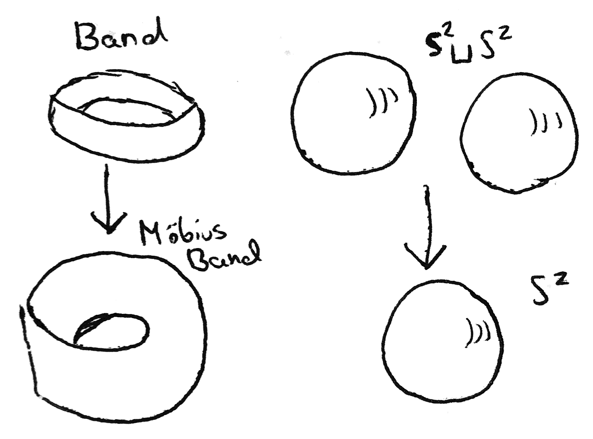
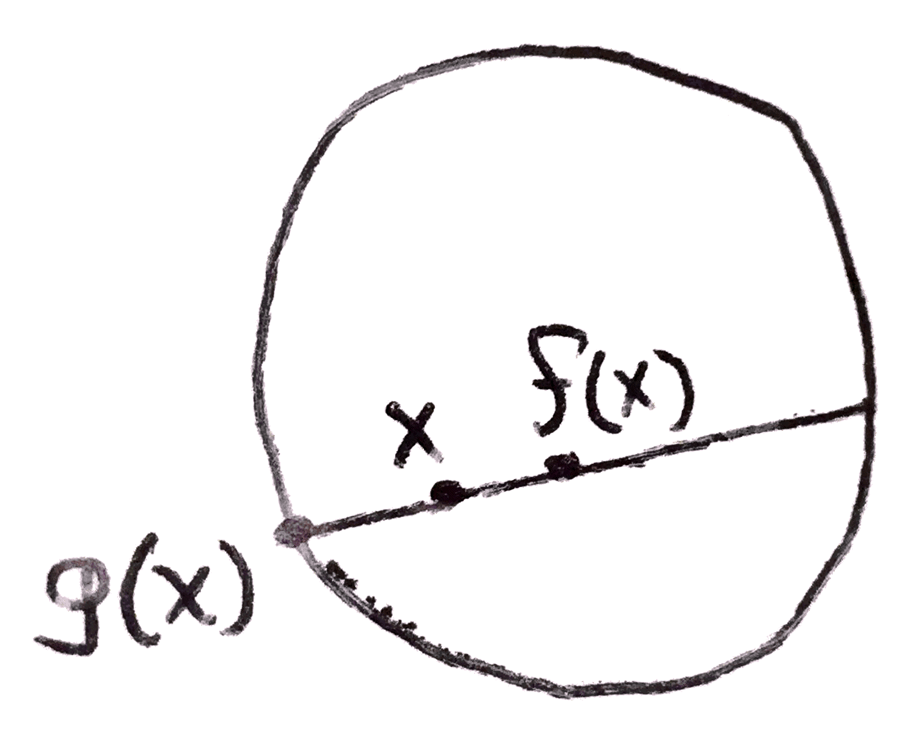
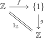
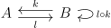
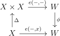
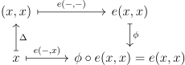

Date: 7/19/17.
In the mid 20th century, a lot of math was happening, fields like algebraic topology and homological algebra were developing, and people realized that there were ways of talking and thinking about math that simplified what they were doing. Then in 1945, Mac Lane and Eilenberg launched category theory by defining a category, functor, and natural transformation. Since then category theory and categorical thinking has been prevalent in all sorts of mathematics. It is a very “clean” sort of mathematics: you take a problem into a more general, easier to work with, context, and use properties of this general context to deduce what you want. Rarely are there many ugly technical lemmas, rather the power comes from the definitions.
Note: I do not expect everyone to understand every example I give in this lecture series. Because category theory is so widespread, it is possible to give examples in many different fields, and to expect my audience to have the background to understand each of these examples is asking a lot. Instead, many examples will likely be algebraic or topological in nature, and I hope that my audience will attempt to understand all of my examples even if succeeding proves to be impossible for some of them. Indeed I believe that the more examples of a categorical idea you have thought carefully about, the better you understand it.
Here are two examples of solving a problem that are categorical in their approach. The first, known as Buffon’s Needle, is the following: suppose we drop a needle of length 1 onto a collection of lines spaces 1 apart from one another. What is the probability of the needle intersecting one of the lines? To answer this, we first observe that the probability of the needle hitting a line is the same as the expectation, since the needle cannot hit two lines.
We can ask, what is the expected number of lines a noodle hits, where a noodle is like a needle except it doesn’t have to be straight or length one. Since expectation is linear, the answer will be proportional to the length of the noodle. Here we have done something categorical: changing to the more convenient context of noodles and expectation, which gives us more flexibility in approaching the problem.
If we choose our noodle to be the circle of diameter 1, the expected number of lines hit is 2. Then by linearity the expectation our original line has expectation \(\frac{2}{\pi }\), and so this is also its probability. Picking out the circle as a particularly nice object is another categorical element in the proof.
The second is as follows: Let \(T\) be the set of (possibly empty) binary rooted trees. \(T\) is in bijection with \(T^2 + 1\): pairs of binary rooted trees with an extra element as follows: a tree in \(T\) is either empty (corresponding to 1) or has a root, which splits into two (possibly empty) binary rooted trees (corresponding to \(T^2\)). Working in the semi-ring \(\NN [T]/(T=T^2+1)\) we can prove that \(T = T^7\), giving us an explicit bijection between \(T\) and \(T^7\). That this can be done is hinted to by the fact that \(T = T^2+1 \implies T = e^{\frac{2\pi i}{6}} \implies T^7 = T\). This proof is a kind of categorification, taking some mathematical context and describing it in a general (and abstract) context to reveal insights about it.
So what is category theory? One description is the study of structure. Wherever there is structure, it is possible that a categorical viewpoint may be helpful. However, it is also a way of thinking as described in the two earlier paragraphs. Because category theory likes to look at mathematical objects at its bare bones, it is often quite abstract. Hence I think that in order to truly understand and appreciate it, it is necessary to have plenty of examples to work with, which I intend to provide during this lecture series.
When we do mathematics, we tend not to study objects in isolation. For example, we don’t just study sets, but also the functions between them. We don’t just study groups, but also the homomorphisms between them. We don’t study just topological spaces, but the continuous functions between them. Hence the notion of a category:
Definition 2.1. A category \(C\) is a collection of objects \(O_C\) and arrows (sometimes called morphisms or maps) \(A_C\) such that each arrow points from one object to another. If \(a,b,c \in O_C\), \(f\) is an arrow from \(a\) to \(b\), \(g\) is an arrow from \(b\) to \(c\), we can compose these arrows to get can arrow \(g\circ f\) from \(a\) to \(c\). This composition is associative. Finally, we require that every object \(a\) of the category has an arrow from it to itself called \(1_a\), which is an identity with composition.
We can denote the set of arrows in \(C\) from \(a\) to \(b\) in \(C(a,b)\) (some use \(\Hom (a,b)\)), and write \(\dom{f}=a\) and \(\cod{f}=b\) (domain and codomain). As shorthand, we say \(a,b \in C\) and \(f:a\to b\) is an arrow. What are examples of categories? Familiar ones are the category of sets, groups, topological spaces, rings, totally ordered sets, varieties, abelian groups, R-modules(figure out what the arrows are). In category theory, it is emphasized that the arrows are more important than the objects: For example, we don’t care what a particular group is, rather just its isomorphism class and how it relates to other groups. However, these examples might make it seem that arrows should be thought of as a kind of function, which is not always the best viewpoint. For example, a partial order is just a category in which there is at most one arrow between any two objects (an arrow from \(a\) to \(b\) can be interpreted as \(a \leq b\). Finally, consider a category with just one object such that every arrow has a right and left inverse with respect to composition. This is just a group.
Here are some notions that you are probably familiar with that can be described categorically.
This matches the definition of isomorphism that you are used to in familiar categories. For example, in the category of sets, \(\Set \), this is just a bijection. In the category of groups, \(\Grp \), and rings \(\Ring \) or \(\CRing \) (C for commutative), it is an isomorphism, and in the category of topological spaces, \(\Top \), it is just a homeomorphism.
Suppose \(f\) is an arrow. Then \(g\) is a section of \(f\) if it is a right inverse, ie \(f \circ g = 1_{\cod{f}}\). This word also is familiar in our various contexts. For example in \(\Set \), this is essentially a choice function. In \(\Top \), which is probably where the word originates from, this is just an embedding of a space inside something that can collapse to it. For example, If you consider a closed manifold, you can consider its orientation double cover. The manifold is orientable if and only if there is a section of this cover.

Similarly, one may define a retraction of \(f\) to be an arrow \(g\) that is a left inverse. Note that this definition is opposite to that of a section. This will be made precise later as duality in category theory.
Now let’s define the second important concept, functor. A functor should be thought of as a morphism of categories.
Definition 3.1. A functor \(F\) from categories \(C\) to \(D\) is a function taking \(O_C\) to \(O_D\), and \(A_C\) to \(A_D\). We can write \(Ff\) and \(Fa\) if \(a \in O_C\) and \(f \in A_C\), A functor must satisfy \(F1_a=1_{Fa}\) and \(Ff \circ Fg = F(f\circ g)\).
Note that when \(C\) and \(D\) are groups, this is just a group homomorphism. What are examples of functors? Algebraic topology in a sense is all about studying functors. For example consider the category \(\Top ^*\), which is just pairs \((X,x_0)\) of topological spaces with a base point. Morphisms here are just continuous maps that take base points to base points. Now we can consider, up to a continuous deformation, oriented paths on \(X\) that start and end at \(x_0\). We can add these paths by concatenation and this gives us a group, called the fundamental group, written \(\pi _1(X,x_0)\). This is a functor, as given a morphism \(f\) from \((X,x_0)\) to \((Y,y_0)\) we get a homomorphism on their fundamental group \(\pi _1(f)\) from \(\pi _1(X,x_0)\) to \(\pi _1(Y,y_0)\) by sending a path on \(X\) through \(f\). We can easily check that this satisfies the properties of a functor.
So why do algebraic topologists care about functors? Well they allow one to study topological spaces more easily. For example, one might wonder if the torus, \(S^1\times S^1\) and the sphere, \(S^2\), are homeomorphic spaces. One might have a hard time showing directly that these two spaces are homeomorphic, but one can easily see this from the fact that \(\pi _1\) is a functor. For if \(f\) and \(g\) are inverse maps that are homeomorphisms between \(S^1\times S^1\) to \(S^2\), \(\pi _1\) is compatible with composition, so \(\pi _1f\) and \(\pi _2f\) will be isomorphisms between the fundamental groups of the two spaces. But one can actually compute the fundamental groups of these spaces, which are \(\ZZ ^2\) and the trivial group \(\{1\}\) respectively, which are different groups. Thus the two spaces cannot be homeomorphic.
This used the fact that:
This is a simple proposition, but it demonstrates how functors preserve structure of a category.
Here is another slightly less trivial topological example. Consider the disk \(D^2\). One may ask, does every map from the disk to itself have a fixed point? This can be proven using \(\pi _1\), and its n-dimensional analog can be proven similarly using another functor, called cohomology. We do the following: suppose that a map \(f\) existed from \(D^2\) to \(D^2\) that didn’t have a fixed point. Then we could draw the line between \(x\) to \(f(x)\) and on the side of the line where x is, we would get a point on the boundary, \(S^1\). Doing this for all \(x \in D^2\) would give a continuous map \(g\) from \(D^2\) to \(S^1\), that restricted to \(S^1\) is the identity.

This is a retraction, as we can consider the inclusion \(i\) from \(S^1\) to \(D^2\), and \(g \circ i = 1_{S^1}\). However using \(\pi _1\) we can show that this is impossible. choose a base point \(x \in S^1\). \(\pi _1(S^1,x)=\ZZ \) and \(\pi _1(D^2,x)\) is \(\{1\}\). We can easily see that similarly to Proposition 3.2 functors send sections and retractions to sections and retractions. Then if such an \(f\) existed, we would get the diagram below after sending the retraction to \(\Grp \) via the fundamental group:

This diagram is called a commutative diagram. What it means is that any composition of paths that start and end in the same place are equal. In this case it just means \(g \circ f = 1_\ZZ \). However clearly this diagram should be impossible as it implies that there is a group homomorphism from \(\{1\}\) to \(\ZZ \) that is surjective, which is certainly not the case. Thus we have proven that there must be a fixed point.
The notion of a commutative diagram is an important one, and is worth discussing a bit more before moving on. Even though in this particular example, it might have been easier to write the equation down instead of drawing a diagram, as one studies more complicated things, diagrams (and commutative ones) become concise presentations of what could have been a lot of symbols. Part of the mindset of category theory is to be able to describe what is going on in terms of a diagram. In fact, in a sense, a diagram is really itself just a functor. For example, I will tell you what functor the diagram above is. I will define a category I call the split idempotent category, or \(\SIdem \), with two objects, \(A\) and \(B\), and three non identity arrows \(k\) and \(l\). It looks like the following:

Composition works such that \(k \circ l = 1_A\). Now the first diagram I drew is the following functor: it sends \(k\) to \(g\) and \(l\) to \(f\), and on objects (though this is redundant) it sends \(A\) to \(\ZZ \) and \(B\) to \(\{1\}\). The fact that the triangle commutes is encoded in the fact that \(k \circ l = 1_A\). One may similarly view all diagrams as a functor from an appropriate category.
Now let’s look at an example in which viewing something categorically using commutative diagrams is incredibly concise: consider the diagonalization argument. I claim it can be summed up in the following commutative square:

Here is how this can prove, for example, Cantor’s Theorem. Suppose that \(X\) were in bijection with \(W^X\). We have an evaluation map \(e(-,-)\) from \(X\times W^X\) to \(W\) that takes \(x \in X\) and \(f \in W^X\) (viewed as a function \(W \to X\)) and evaluates it on \(x\). But now that \(X\) and \(W^X\) are in bijection, this can be seen as just a map from \(X\times X\) to \(W\). The evaluation map has a very special property: any map from \(X\) to \(W\) is of the form \(e(-,x)\) for some \(x \in X \cong W^X\). In the diagram above, let \(\phi \) be any map from \(W\) to itself, and let \(\Delta \) be the diagonal map, taking \(x\) to \((x,x)\). We know that the composite \(\phi \circ e(-,-)\circ \Delta \) is of the form \(e(-,x)\). What happens if we chase x around the diagram? Let’s try it.

Going one way around we get \(\phi \circ e(x,x)\) and on the other we get \(e(x,x)\), so since the diagram commutes, these must be equal. Thus there is a fixed point of \(\phi \). But \(\phi \) is arbitrary, so \(W\) must be the set containing one element.
If one is not familiar with this style of proof, it may seem strange. “Why would anyone want to give this strange argument when I can just prove this normally?” Well it turns out viewing the diagonalization argument in this light makes the argument generalizable to other contexts (a common theme in category theory). For example, we can show that the impossibility of solving the halting problem using the same diagram. Now, we with to interpret \(X\) as the set of natural numbers, \(W\) as the set \(\{T,F\}\) and \(\phi \) as the function swapping \(T\) and \(F\). \(e\) will now be a program that supposedly can solve the halting problem: it takes in a natural number \(x\), and a (code for a) program \(y\), and halts if and only if \(y\) halts on \(x\). It takes values in \(W\) as \(T\) if it halts and \(F\) if it doesn’t. Now this e has the analogous property to \(W^X\): if \(x \in X\) is a program that takes values in \(W\), it is of the form \(e(-,x)\). Then by the exact same argument, \(\phi \) must have a fixed point, which is impossible.
In this way, the categorical proof of the diagonalization argument really gets to why the argument works, as it easily applies to analogous situations.
Let’s get back to examples of functors. From each of the categories \(\CRing \),\(\Grp \), and \(\Top \) is a forgetful functor to \(\Set \): it takes a group for example, to its underlying set, and a homomorphism to its underlying function. These are not interesting in of themselves, but are interesting in relation to other functors. A category equipped with a forgetful functor to \(\Set \) is called a concrete category. For example, perhaps you are familiar with the discrete/indiscrete topologies, or the free group. These are functors from \(\Set \) to \(\Top \) and \(\Grp \) which are intimately related with these forgetful functors, but I won’t be talking about that this time.
My last example for now of a functor is the covariant Hom functor. If \(C\) is a category, and \(a\) is an object in it, we can consider the functor \(C(a,-)\) which takes \(b \in C\) (I will now just say \(C\) instead of \(O_C\)) to \(C(a,b)\). on arrows, it takes \(f:b \to c\) to the function from \(C(a,b)\) to \(C(a,c)\) that takes an arrow from \(a\) to \(b\) and composes it with \(f\). What if we tried to define a functor \(C(-,a)\) similarly? Well we can do it, except notice something interesting happens. Now, a map \(b \to c\) induces a map \(C(c,a) \to C(b,a)\): the direction of arrow has switched! Then this cannot be a functor, right? Well it is, if you are careful about which two categories it is a functor between (this will be discussed in more detail later). A functor that switches the direction of arrows is called a contravariant functor. A functor that does not switch the direction of arrows is covariant. Then the functor \(C(-,a)\) is contravariant while \(C(a,-)\) is covariant.
Given two functors, one may compose them in the obvious way. Indeed, one still gets a functor, and this composition is obviously associative. Additionally, every category \(C\) has an identity functor \(1_C\) which is defined the obvious way. In this way we can make the category \(\Cat \) which consists of categories and the functors between them.
One note is that we sometimes care about the sizes of the sets we are working with. For example, there are a *lot* of objects and arrows in \(\Set \), large enough that we need to describe \(\Set \) in a larger universe of sets. Because of this, we call \(\Set \) a large category. Any category that can be described in \(\Set \) (ie the sets of objects and arrows are in \(\Set \)) is called a small category. Any category \(C\) for which \(C(a,b)\) can be described in \(\Set \) are called locally small categories. We shouldn’t worry about these distinctions too much right now.